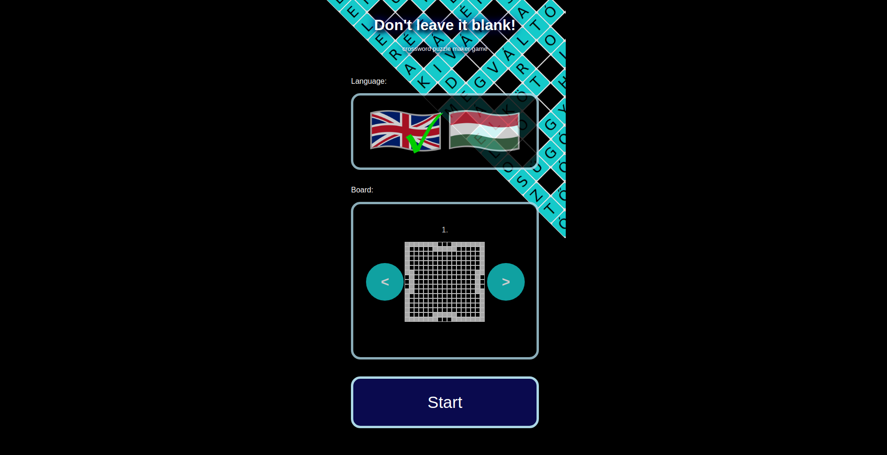

Don't Leave It Blank! is a crossword puzzle game where, unlike crossword puzzles, there are no definitions, only the letters randomly drawn, the time limit, your vocabulary, your own foresight, and finally, the built-in dictionary limits you to complete the grid. (So, quite a lot of things. :) ) The goal of the game is to fill the grid completely in as few rounds as possible and to achieve the highest possible score. 100 seconds per turn is available to the player for word formation. The newly placed letters must fall in a line and at the end of each turn only the words in the built-in dictionary may remain on the board. In total, and not necessarily in succession, after three rounds in which no new letter is placed on the board, the game ends automatically.
Facebook group: f
Video tutorial: 
The game can be used on both computers and mobile devices. On a computer, there are two options for placing letters on the board. You can drag them from the rack to the desired field on the board. Or click on the field of the board where you want to place the first letter of the word you want to drop. An arrow will appear in the space to indicate the direction of the drop. If you click there again, the direction will change from horizontal to vertical, and vice versa. And then click on the letters on the rack in the order in which they follow each other in the word. On touchscreen devices, only the second option is given. You tap in the first letter's square, then the letters on the rack in order, as they follow each other in the word.
When you start the game, you can choose between English and Hungarian. At the moment there are 7 increasingly hard boards to play. After each turn the state of the game is automatically saved on your computer. If you start the game the program detects a saved game (interrupted game), it will offer to continue it.
Click on the New game button to start a new game. If you do this while a game is in progress, a warning message will appear. If you go on, you cannot continue the previous game. Use the Cancel button to return to the game in progress. If you do not want to play on the previous board and/or language, you need to reload the page to return to the screen that allows you to change the current settings.
During the game, you have 10 new letters in each turn, of which 100 seconds (1 minute 40 seconds) you need to place at least one on the board. The current time remaining is displayed both in digits and graphically, using a progress bar.
If no new letter is placed on the board during the turn, it is considered as inactivity. The number of the current turn and the number of idle rounds are shown in a common display, separated by a "/" sign. When the number of idle rounds reaches three, the game ends.
Use the Search button to make sure the dictionary contains the word you want to place. This can be useful when we put out only one shorter, contained word in a turn, but we want to make sure that the containing, longer words are also valid. Red indicates if the word is not valid, the text turns green if it is valid.
Use the Pause button to stop and resume the game. During the pause, the current state of the board and the letters on the rack are not visible.
To make the game easier, "*" (joker) characters often are drawn. When they are placed on the board, they can be replaced with the desired letter by selecting one of the pop-ups listing the letters of the alphabet.
Letters which have been placed on the board but not yet finalised can be returned to the rack by pressing the Back button. The order of the letters on the rack can be changed by pressing the Shuffle button.
Each time a letter is placed on the board, the program checks that the letters on the board form a valid word in the dictionary. If they do, the colour of the newly added letters changes to yellow. It also indicates that the direction of the letters placed and the perpendicular to where the letters are placed, what possibilities the dictionary offers for further turns:
The finalisation of the letters on the board is done with the Done button, then the validity of all the newly created words is checked against the built-in dictionary. If a word is not in the dictionary, a pop-up message warns you. After pressing OK, you can try again to create the word.
The primary goal is to fill the board completely (as the name of the game suggests), so placing the longest word on the board may not be the best way to accomplish this, while the secondary goal, fewer rounds of completion, and the tertiary goal, the point maximization aspect might require this. Longer spaces should be filled sooner, though not necessarily within 1-2 rounds. It is always worth paying attention to leave as many options as possible for the later matching of crossing words.
Letters placed on the board in one turn are worth one point each, but if four or more letters are placed on the board at the same time, the following bonus points are awarded for them:
The percentage of completion is primary for ranking the results. In case of same ratio, the number of rounds, in case of the same result again, the score is decisive. In the end, the one who spent less time in the game has the better result. Good game!